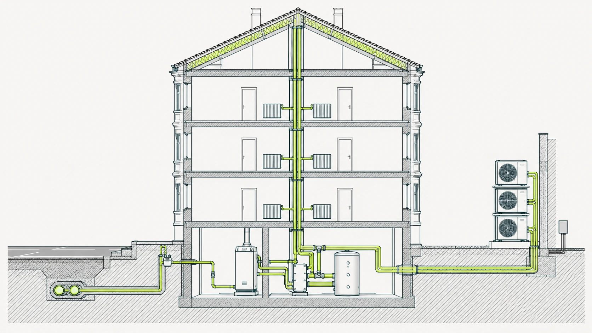
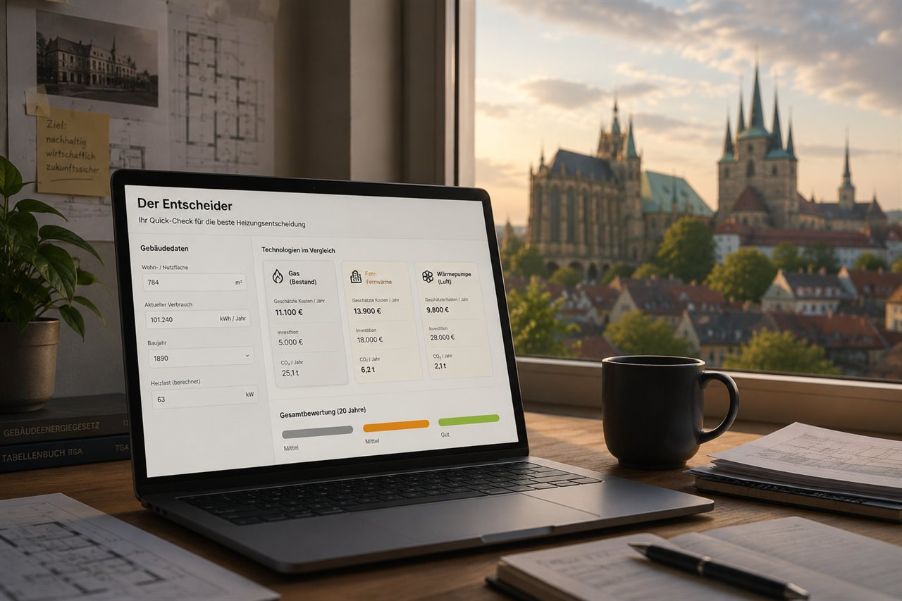
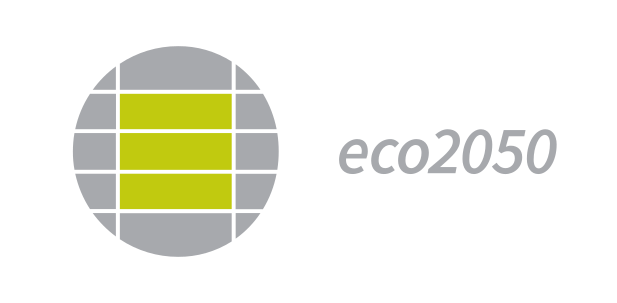

Die Lücke
Eine Heizungsentscheidung ist für eine Eigentümergemeinschaft ein Projekt über ein bis zwei Jahre: Gebäudedaten, Gutachten, Förderfristen, Beschlüsse. Die Hausverwaltung trägt den laufenden Betrieb. Für die Steuerung eines solchen Projekts bleibt im Verwalteralltag selten Raum. hausentscheider setzt dort an, mit Information für alle Eigentümer und mit Begleitung, wenn es konkret wird.
Der Wegweiser
Der Wegweiser stellt die Fragen, die vor Ihrer Entscheidung zählen, und markiert jede als belegt oder offen. Offen heißt: Eine belastbare Angabe liegt bisher nicht vor.
Der Entscheider
Wirtschaftlichkeit, persönliche Gewichtung und Zukunftsfähigkeit Ihrer Heizungsentscheidung — auf einer Seite. Keine Empfehlung von der Stange, sondern eine belastbare Grundlage, bevor Sie ein Ingenieurbüro beauftragen.
Für Verwaltungen
Sie betreuen Eigentümergemeinschaften, die vor der Heizungsfrage stehen? Hier steht, was Sie Ihren Eigentümern an die Hand geben können: frei zugänglich, mit Quelle und Stand.
Stand des Verfahrens, unabhängige Bewertung und Berichterstattung, fortgeschrieben.
Ihr Gebäude im Verfügbarkeitscheck der Stadtwerke prüfen →ein Anhaltspunkt, keine verbindliche Zusage
Energiepreise schwanken — und welche Heizung sich langfristig rechnet, hängt genau davon ab. Hier die aktuellen Verbraucher-Durchschnittspreise je Energieträger, vergleichbar gemacht in der gemeinsamen Größe ct/kWh (Fernwärme als Erfurter Effektivpreis). Monatlich aktualisiert.
Fernwärme zum 1. Oktober: moderate Anpassung — und eine neue Fußnote
Die SWE hat ihre Fernwärmepreise zum 1. Oktober angepasst: Arbeitspreis 14,309 ct/kWh brutto (+3,9 %), Zertifikatepreis 1,779 ct (−7,8 %), Leistungspreis 75,24 €/kW·a. Am Referenzgebäude steigt der Effektivpreis damit um rund 2 % auf ~19,7 ct/kWh bei 97.601 kWh Gaseinsatz (ohne Zertifikat 17,9 ct) — deutlich weniger als der Sprung im Juli. Geändert hat sich auch die Fußnote: Die Zertifikatepreise für das erste bis dritte Quartal wurden laut Preisblatt ohne die kostenlos zugeteilten CO₂-Zertifikate ausgewiesen. Was das für bereits abgerechnete Quartale bedeutet, nennt das Preisblatt nicht. Der Q4-Preis gilt bis 31. Dezember.
SWE-Preisblatt Wärme (Stand 1.10.2026) →Alle Werte in ct/kWh brutto. Vier der fünf sind umgerechnet — Heizöl aus ct/l ÷ 10,0 kWh/l (TECSON, 3.000 l), Pellets aus €/t ÷ 5,0 kWh/kg (DEPI, 6 t), Gas als Mittel aus Neukunden- und Bestandstarif ohne Grundversorgung, WP-Strom als Bandmittel der Anbieterspanne 22–26 ct. Fernwärme = Erfurter Effektivpreis auf Gebäudeebene, quartalsweise statt monatlich — der Q4-Preis von ~19,7 ct gilt bis 31.12.2026 (SWE-Preisblatt 1.10.2026). Im Oktober sind zwei Werte noch nicht endgültig: Heizöl ist vorläufig (TECSON 10.10., Stichtag um den 14.), Pellets zeigen noch den Septemberstand (DEPI meldet um den 18.). Fernwärme: Effektivpreis mit CO₂-Zertifikat, in der Monatsreihe seit Juli 2026 bei 97.601 kWh Gaseinsatz 2024 und 46 kW (Oktober ohne Zertifikat 17,9 ct). Auf die 77.000 kWh Wärmeabgabe des Referenzgebäudes gerechnet sind es 20,7 ct (ohne Zertifikat 18,9 ct). Alle Quellen, Faktoren und Rechenwege →
Ihre Heizungsentscheidung gilt zwei Jahrzehnte — der Boden darunter aber bewegt sich: neue Technik, neue Gesetze, neue Förderung, lokale Entwicklungen in Erfurt. Der Kanal behält das im Blick und meldet jeden Freitag, was Ihre Entscheidung wirklich berührt — belegt, eingeordnet, ohne Werbung.
Der Kanal ist die schnelle Spur, hausentscheider.de das Nachschlagewerk: auf dem Handy die Kurzfassung, auf der Website die Herleitung, die Quellen und der Entscheider-Rechner, mit dem Sie es auf Ihr eigenes Gebäude beziehen.
Welches Thema wünschen Sie sich im Kanal? Schreiben Sie an dialog@hausentscheider.de. Anregungen fließen in die Themenauswahl ein.
Einseitiger Kanal: Sie empfangen, ohne selbst zu senden. Ihre Nummer bleibt für den Betreiber und andere Mitglieder unsichtbar. Jederzeit ohne Angabe von Gründen kündbar.
Objekt 001 · Erfurt Innenstadt · Dokumentiert seit 2024
Mehrfamilienhaus · Altstadt Erfurt
Altbau 1900 · Saniert 2010 · 14 Wohnungen · 769,83 m² beheizte Fläche · WEG · Gas-Heizung

Erhaltungsrücklage: 64.745 € · 7,79 €/m²·a, unter der Fachempfehlung für Altbauten von rund 17 €/m²·a.
Für dasselbe Haus lagen drei Heizlastwerte auf dem Tisch: 62, 58,9 und 46 Kilowatt. Auf diese eine Zahl wird jedes Angebot ausgelegt.
Hausentscheider ist eine unabhängige Initiative, die kommunale Wärmepläne aus Eigentümerperspektive systematisch einordnet und verständlich macht.
Sie entstand aus der Erkenntnis, dass Eigentümerinnen und Eigentümer die eigentlichen Hausentscheider der Wärmewende sind — und dass sie eine sachliche, methodisch fundierte Stimme verdienen, die keinem Anbieter, Versorger oder Verband verpflichtet ist.
Hausentscheider ist in Erfurt verwurzelt — ein Raum, in dem Eigentümer mit denselben Fragen zusammenkommen, sich vernetzen und gemeinsam klarer werden. Denn Vertrauen entsteht nicht durch Reichweite, sondern durch Tiefe: durch echte Daten und echte Dialoge.
Die Energiewende schafft Gewinner und Verlierer. hausentscheider stellt die Informationen bereit, die Sie für Ihre eigene Entscheidung brauchen.
Investitionsrechner für Ihre Heizungsentscheidung. Wirtschaftlichkeit, persönliche Gewichtung und Zukunftsfähigkeit — auf einer Seite.
Keine einzelne Sicht gibt die Antwort; erst alle drei zusammen machen die Entscheidung sichtbar. Kein Ersatz für eine Ingenieursplanung — aber eine belastbare Grundlage, bevor Sie eine beauftragen.

Der Future Readiness Index fragt nicht, ob eine Kommune plant — sondern ob sie wirklich zukunftsfähig entscheidet.
Entwickelt im Rahmen eines Forschungsprojekts mit dem eco2050 Institut für Nachhaltigkeit, basiert der Ansatz auf vier Experteninterviews mit zentralen Akteuren der deutschen Wärmewende sowie einer umfassenden Systemanalyse.
Executive Summary lesen →So sieht der Future Readiness Index angewandt auf Erfurt aus: die echte kommunale Wärmeplanung im Ist-Soll-Spiegel.
Zur Future-Readiness-Bewertung →Über den Autor
Transformationsforscher · Wohnungseigentümer in Erfurt
Warum ich das mache → (PDF) · Eigentümer-Einschätzung → (PDF)
Daniel Schöberl ist in Erfurt aufgewachsen und Wohnungseigentümer in der Erfurter Innenstadt. Er lebt in München — und weiß, was es bedeutet, wenn kommunale Entscheidungen über Wärme zur persönlichen Investitionsfrage werden.
Er forscht zu den Bedingungen, unter denen die Energiewende gelingt, und entwickelt am eco2050 Institut für Nachhaltigkeit den Future Readiness Index — ein Bewertungsinstrument für die Zukunftsfähigkeit kommunaler Wärmepläne. Als Wohnungseigentümer in Erfurt ist er selbst direkt betroffen von den Entscheidungen, über die er forscht und schreibt.
Forschungsprojekt betreut von Dr. Dina Barbian · eco2050 Institut für Nachhaltigkeit

Welche Heizung ist am eigenen Gebäude zulässig, was kostet sie über 25 Jahre, welche Fristen gelten für Förderung und Befreiung? hausentscheider bereitet diese Fragen belegt auf, als gemeinsame Grundlage für alle am Tisch.
Wenn es konkret wird, begleitet hausentscheider Gemeinschaft und Verwaltung gemeinsam: Zahlen einordnen, Unterlagen prüfen, die Versammlung vorbereiten.
Frei zugänglich, ohne Anmeldung, ohne Cookies und ohne Tracking. Quellen und Stand sind angegeben. Fragen und Hinweise an dialog@hausentscheider.de. Begleitung für einzelne Gemeinschaften ist eine Leistung auf Anfrage.
Zum Kontakt →Sind Sie Eigentümerin oder Eigentümer oder Beirat einer WEG und stehen vor einer konkreten Entscheidung? Betreuen Sie als Hausverwaltung Gemeinschaften, die diese Frage vor sich haben? Kommen Sie aus einer Kommune, in der die Wärmeplanung ansteht? Oder sind Sie Mieterin oder Mieter und wollen verstehen, was auf Ihr Haus zukommt? Schreiben Sie mir, ich antworte persönlich.
Oder direkt per E-Mail: dialog@hausentscheider.de
Ihre Angaben werden ausschließlich zur Beantwortung Ihrer Nachricht verwendet und nicht weitergegeben.
Geht es um die gemeinsame Sache — Rechte und Fristen in der Eigentümergemeinschaft, Austausch unter Beiräten, die wissenschaftliche Begleitung von Entscheidungsprozessen? Dafür gibt es die gemeinnützige Eigentümerstimme — dialog@eigentuemerstimme.de.
Daniel Schöberl
Grasmückenweg 7 B
80937 München
Deutschland
Kontakt
E-Mail: dialog@hausentscheider.de
Verantwortlich für den Inhalt gemäß § 18 Abs. 2 MStV
Daniel Schöberl, Anschrift wie oben.
Haftungshinweis
Die Inhalte dieser Website wurden mit größtmöglicher Sorgfalt erstellt. Für die Richtigkeit, Vollständigkeit und Aktualität der Inhalte wird jedoch keine Gewähr übernommen.